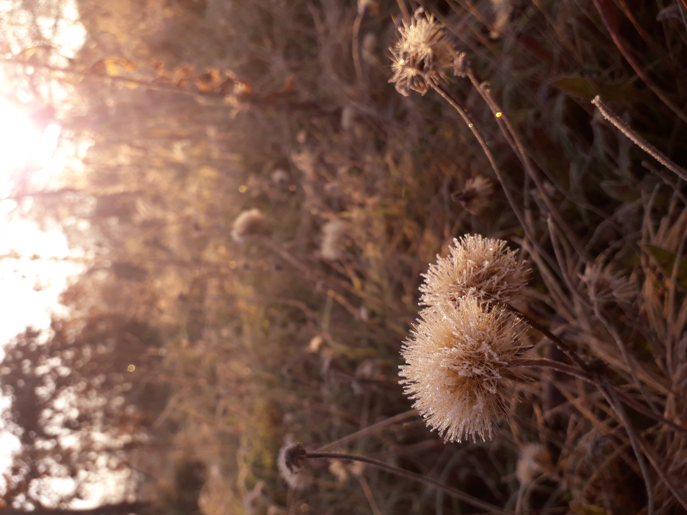

Rímtelen nyökögésem egy hűvös őszi napon
Lehunyt szemmel fordultál az ég felé, nem siettetett semmi sem annyira,
hogy egy percre meg ne állj a sétány köveinek szélén
és engedd az utolsó októberi napsugaraknak
gyöngéden aláhulló lángszirmokban fürdetni meg arcod
és csontjaidig megmelengetni fáradt mellkasod.
A vállad fölött langyos szellő vonult el, rövid, mint messziről jött sóhaj,
útjában megérintette állad és megrezzentette hajszálaid,
majd tova szökött, mint a valakit kereső tekintet.
Nyírfák és sárga levelű csertölgyek puha, fűszeres illata töltötte meg a levegőt.
A bokor mellett dolmányosvarjú csörgette a száraz avart egy hosszú,
görbe ágacskát szorítva bakacsin csőrkávái között.
A főút zaja, mint távoli, halkan zúduló fekete aszfaltfolyónak csobogása
szűrődött át a ligeten, egybevegyülve a szajkók nevetésével
és a fák szelíd suttogásával.
Vértől rózsás arcod megérintette a hideg, ahogy elbújt a Nap,
aranyszínű csipkét vonva a felhők szélére és végtelen sugaraiból
pártával koronázva a bíborba merülő kék eget.
Egy perc sem volt az egész,
kinyitottad a szemed és tovább indultál a fák alatt az őszi délutánban,
bőrödön hordozva az utolsó októberi napsugarak melegét.
A dolmányosvarjú felrebbent és elvitte az elszáradt gallyat.
A sóhajom mindtovább bolyongott a szellővel, keresve, vakon, nyughatatlanul.